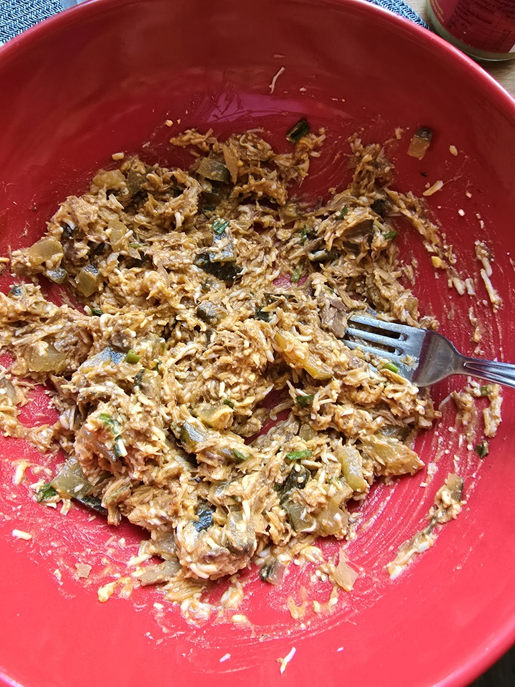
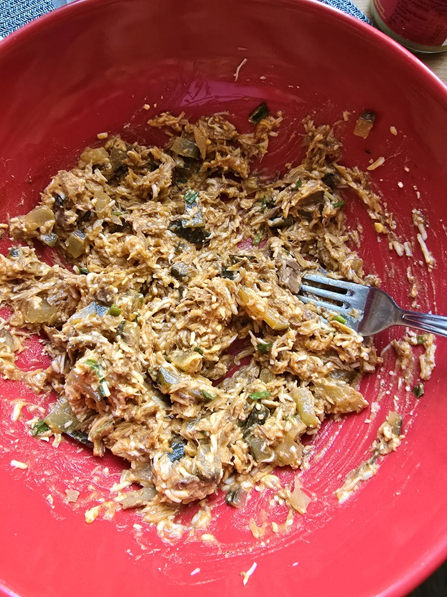

Skład:
- jajka;
- ryba w sosie pomidorowym;
- ogórek kiszony;
- szczypior;
- cebula;
- pieprz;
- sól;
Przygotowanie:
Jajka ugotować na twardo i zetrzeć na drobnych oczkach. Rybę rozdrobnić widelcem i połączyć z jajkami, przełożyć do misy. Pokroić ogórka i cebulę w drobną kostkę, posiekać szczypiorek; dodać to wszytko do misy. Całość przyprawić solą i pieprzem po czym dobrze wymieszać.
Zdjęcia:
 
